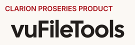

Home | All functions | Categories
Version: 5.0
Last Updated: 2026-11-19 (Build: 212)
Copyright (c) 2026 Clarion ProSeries by LANSRAD. All rights reserved.

Visit the vuFileTools product page
vuFileTools brings more than 200 ready-to-use Windows utility functions to Clarion applications. Instead of writing lengthy Windows API code, you can use established functions for everyday programming tasks and advanced Windows features.
The library covers file and directory management, disk information, Windows and system operations, running programs and monitoring processes, network information, registry access, shortcuts, string manipulation, data conversion, interprocess communication, and other utilities. Browse the complete A–Z function reference or functions by category.
Build 212 includes optional Window Dimming, which makes a parent window less prominent while an update form or message window is displayed. It supports ABC and Legacy applications, configurable overlay colors, standard Clarion messages, and manual controls.
Window Dimming is disabled by default in vuFileTools. When you want it, open vuFileTools Initialization under Global Extensions, select the Window Dimming tab, uncheck Disable window dimming templates, and compile. The normal automatic options are already selected. A Windows 8-or-later compatibility manifest is required for Window Dimming, not for the rest of the library.
Developers who need only Window Dimming can also obtain the standalone cdWindowDim Code Drop.
For the online manual visit https://clarionproseries.github.io/docs/vuFileTools/ . The Markdown source is available at https://github.com/ClarionProSeries/docs/tree/main/vuFileTools .